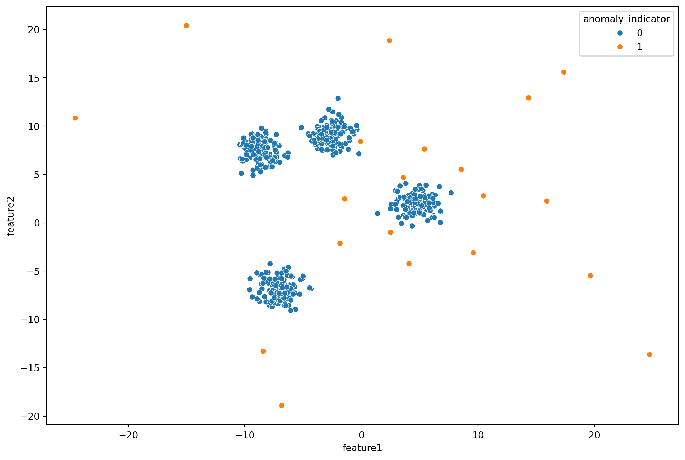

Anomaly detection, also known as outlier detection, is a machine learning technique focused on identifying patterns or instances in a dataset that deviate significantly from the majority of the data. These anomalies can represent rare events, errors, or abnormal behavior that could be indicative of problems or interesting insights. Anomaly detection plays a crucial role in various domains, including fraud detection, network security, manufacturing quality control, and healthcare monitoring.
Anomaly Detection using Gaussian Mixtures
One popular algorithm for anomaly detection is the Gaussian Mixture Model (GMM). GMM is a probabilistic model that assumes the data is generated by a mixture of several Gaussian distributions. In the context of anomaly detection, a GMM is trained on the normal (non-anomalous) instances in the dataset. Anomalies are then identified based on the likelihood of instances under the learned GMM; instances with low likelihoods are considered anomalies.
It can be applied to various use cases like, like Fraud detection in finance to identify unusual patterns that may indicate fraudulent activities, such as unauthorized transactions. In Network Security, detecting unusual patterns in network traffic can help identify potential cyberattacks or security breaches.
For illustrating Anomaly Detection with GMMs, we are creating a synthetic dataset with the make_blobs function from scikit-learn. This dataset is designed to have a specified number of clusters, and each cluster represents a group of similar instances. In this case, we are creating a dataset with three clusters of 500 points. We also manually introduce anomalies by adding synthetically generated datapoints to the dataset.
from sklearn.mixture import GaussianMixturefrom sklearn.datasets import make_blobsimport seaborn as snsimport pandas as pdimport matplotlib.pyplot as pltimport numpy as np# Create synethetic dataX_syn, y_syn = make_blobs(n_samples=500, centers=4, n_features=2, cluster_std=1, random_state=42)df_syn = pd.DataFrame({'feature1': X_syn[:, 0], 'feature2': X_syn[:, 1], 'anomaly_indicator': 0})# Create the anomaly dataX_anomaly, y_anomaly = make_blobs(n_samples=20, centers=2, n_features=2, cluster_std =10, random_state=0)df_anomaly = pd.DataFrame({'feature1': X_anomaly[:, 0], 'feature2': X_anomaly[:, 1], 'anomaly_indicator': 1})# Combine the normal and the anomaly datadf = pd.concat([df_syn, df_anomaly])# Change figure sizeplt.figure(figsize=(12, 8))# Visualizationsns.scatterplot(x=df['feature1'], y=df['feature2'], hue=df['anomaly_indicator'])
<Axes: xlabel='feature1', ylabel='feature2'>

We add an anomaly indicator variable and visualize the data points and anomaly on a scatter plot.
# Model datasetX = df[df.columns.difference(['anomaly_indicator'])]# GMM modelgmm = GaussianMixture(n_components=4, n_init=5, random_state=42)# Fit and predict on the datay_gmm = gmm.fit_predict(X)
We use the Gaussian Mixture Model (GMM) for anomaly detection. n_components=3 indicates that we expect the data to be generated from three Gaussian distributions (normal instances and anomalies). The GMM provides negative log likelihood scores for each instance. Higher scores indicate that an instance is less likely to be part of the learned distribution. The negative log likelihood serves as an anomaly score. Therefore, instances with higher negative log likelihoods are considered potential anomalies.
# Get the score for each samplescore = gmm.score_samples(X)# Save score as a columndf['score'] = score# Get the score threshold for anomalythreshold = np.percentile(score, 4)# Print the score thresholdprint(f'The threshold score is {threshold:.2f}')# Label the anomaliesdf['anomaly_gmm'] = df['score'].apply(lambda x: 1if x < threshold else0)
The threshold score is -7.12
A threshold can be set on the negative log likelihood scores to classify instances as anomalies. Instances with negative log likelihoods exceeding the threshold are labeled as anomalies. We set a threshold that 4% of the overall datapoints to be outliers and identified the corresponding threshold score which comes to -6.56. Thus, we look for points that posses higher negative log likelihoods than the threshold and label them as outliers.
# Visualize the actual and predicted anomaliesfig, (ax0, ax1)=plt.subplots(1,2, sharey=True)# Ground truthax0.set_title('Ground Truth\n(threshold = -6.56)')ax0.scatter(df['feature1'], df['feature2'], c=df['anomaly_indicator'], cmap='rainbow')# GMM Predictionsax1.set_title('GMM Predicted Anomalies\n(threshold = -6.56)')ax1.scatter(df['feature1'], df['feature2'], c=df['anomaly_gmm'], cmap='rainbow')
<matplotlib.collections.PathCollection at 0x7fcb913ab890>
We visualize the results and see that the ground truth is very close to the output generated by the GMM. We can adjust the threshold as needed based on the desired level of sensitivity for anomaly detection.
Precision: 0.7143
Recall: 0.7500
F1 Score: 0.7317
Accuracy: 0.9788
We now perform anomaly detection for a threshold value = -5.56 and see how it impacts the anomaly detection process by visualization, precision, recall and f1 scores.
# Get the score threshold for anomalyvalue_threshold =-5.5# Label the anomaliesdf['anomaly_gmm_v'] = df['score'].apply(lambda x: 1if x < value_threshold else0)# Visualize the actual and predicted anomaliesfig, (ax0, ax1)=plt.subplots(1,2, sharey=True)# Ground truthax0.set_title('Ground Truth\n(threshold = -5.56)')ax0.scatter(df['feature1'], df['feature2'], c=df['anomaly_indicator'], cmap='rainbow')# GMM Predictionsax1.set_title('GMM Predicted Anomalies\n(threshold = -5.56)')ax1.scatter(df['feature1'], df['feature2'], c=df['anomaly_gmm_v'], cmap='rainbow')
<matplotlib.collections.PathCollection at 0x7fcb65fb4c50>
Precision: 0.2469
Recall: 1.0000
F1 Score: 0.3960
Accuracy: 0.8827
The threshold is very important for anaomaly detection as a lower threshold can be seen to classify normal data points as anomalies and reduces the accuracy, precision and recall as well.
Anomaly Detection using Isolation Forest and PCA
The Isolation Forest algorithm is an unsupervised machine learning algorithm designed for anomaly detection. It operates by isolating instances that are deemed rare or different from the majority of the data. The core idea behind Isolation Forest is to isolate anomalies rather than trying to model the normal behavior explicitly. It achieves this by constructing isolation trees, which are binary trees where each node represents a feature and each path from the root to a leaf isolates an instance.
For each tree, a random subset of the data is used. This randomness allows the algorithm to create diverse trees, making it robust and less prone to overfitting. At each node of the tree, a random feature is selected, and a random split value within the range of the selected feature’s values is chosen. An anomaly is expected to be more isolated and, therefore, is likely to have a shorter average path length in the trees. The average path length for a data point across multiple trees is used as the anomaly score.Instances with shorter path lengths are considered anomalies, as they require fewer splits to be isolated in the trees.
Isolation Forest is particularly effective in identifying anomalies because it exploits the fact that anomalies are typically rare and have distinctive properties. By isolating instances in a random and binary manner, anomalies are separated from the majority of the data more quickly, making the algorithm efficient and effective.
Principal Component Analysis (PCA) is a dimensionality reduction technique commonly used in machine learning and statistics. Its main goal is to transform a high-dimensional dataset into a lower-dimensional form while retaining as much of the original variability as possible. PCA begins by standardizing the dataset, ensuring that each feature has zero mean and unit variance. This is important as it gives equal weight to all features during the analysis.
PCA then calculates the covariance matrix of the standardized data. The covariance matrix provides information about the relationships between different features. The next step is to perform eigendecomposition on the covariance matrix. This process yields eigenvalues and corresponding eigenvectors. Eigenvectors represent the directions (principal components) of maximum variance in the data, and eigenvalues indicate the amount of variance along each eigenvector.
Principal components are selected based on the eigenvalues. The components associated with the highest eigenvalues capture the most variance in the data. Typically, the principal components are ranked in descending order of their eigenvalues. Finally, the original data is projected onto the selected principal components, resulting in a lower-dimensional representation of the dataset.
In the context of anomaly detection, PCA is often employed to reduce the dimensionality of the data and highlight the most significant features. Anomalies may manifest as deviations from the expected patterns in the reduced-dimensional space, making them easier to identify. PCA can be used as a preprocessing step to reduce the dimensionality of the data before applying anomaly detection algorithms, including Isolation Forest. In the context of anomaly detection, PCA can help emphasize the most relevant features, making it easier for algorithms like Isolation Forest to identify deviations from normal patterns.
import numpy as npimport pandas as pdimport matplotlib.pyplot as pltfrom sklearn.decomposition import PCAfrom sklearn.preprocessing import StandardScalerfrom sklearn.ensemble import IsolationForest# Example with a synthetic datasetfrom sklearn.datasets import make_blobsdata, _ = make_blobs(n_samples=1000, centers=1, random_state=42, cluster_std=2.0)# Standardize the datascaler = StandardScaler()data_standardized = scaler.fit_transform(data)# Apply PCApca = PCA(n_components=2)principal_components = pca.fit_transform(data_standardized)# Plot the data in the reduced-dimensional spaceplt.figure(figsize=(8, 6))plt.scatter(principal_components[:, 0], principal_components[:, 1], alpha=0.8)plt.title('PCA: Reduced-dimensional Space')plt.xlabel('Principal Component 1')plt.ylabel('Principal Component 2')plt.show()# Identify anomalies using Isolation Forestisolation_forest = IsolationForest(contamination=0.05, random_state=42)isolation_forest.fit(data_standardized)anomaly_scores = isolation_forest.decision_function(data_standardized)# Visualize anomaliesplt.figure(figsize=(8, 6))plt.scatter(principal_components[:, 0], principal_components[:, 1], c=(anomaly_scores <0), cmap='viridis', alpha=0.8)plt.title('Anomalies Identified by Isolation Forest')plt.xlabel('Principal Component 1')plt.ylabel('Principal Component 2')plt.show()
Anomaly detection using Gaussian Mixture Models (GMM) and Isolation Forests with Principal Component Analysis (PCA) offers robust techniques for identifying unusual patterns in complex datasets. GMM excels in capturing intricate data distributions, while Isolation Forests efficiently isolate anomalies through tree-based structures. Incorporating PCA enhances dimensionality reduction, aiding in the identification of subtle anomalies. These methods find applications in diverse fields, including fraud detection, network security, and system health monitoring, where accurate anomaly identification is critical for ensuring the integrity and reliability of systems.